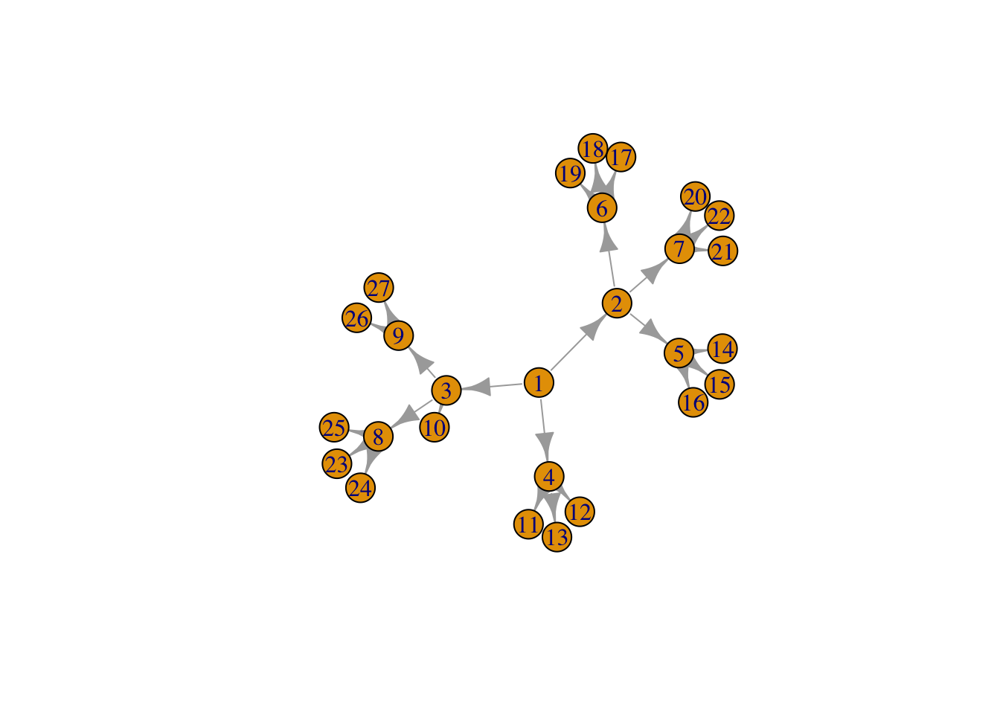
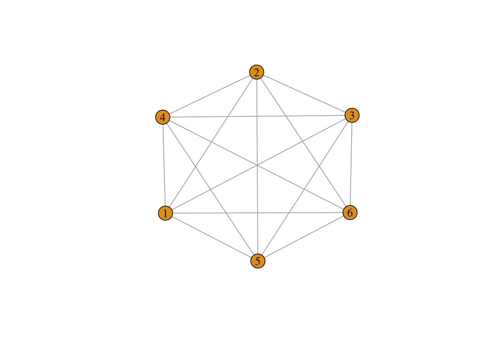
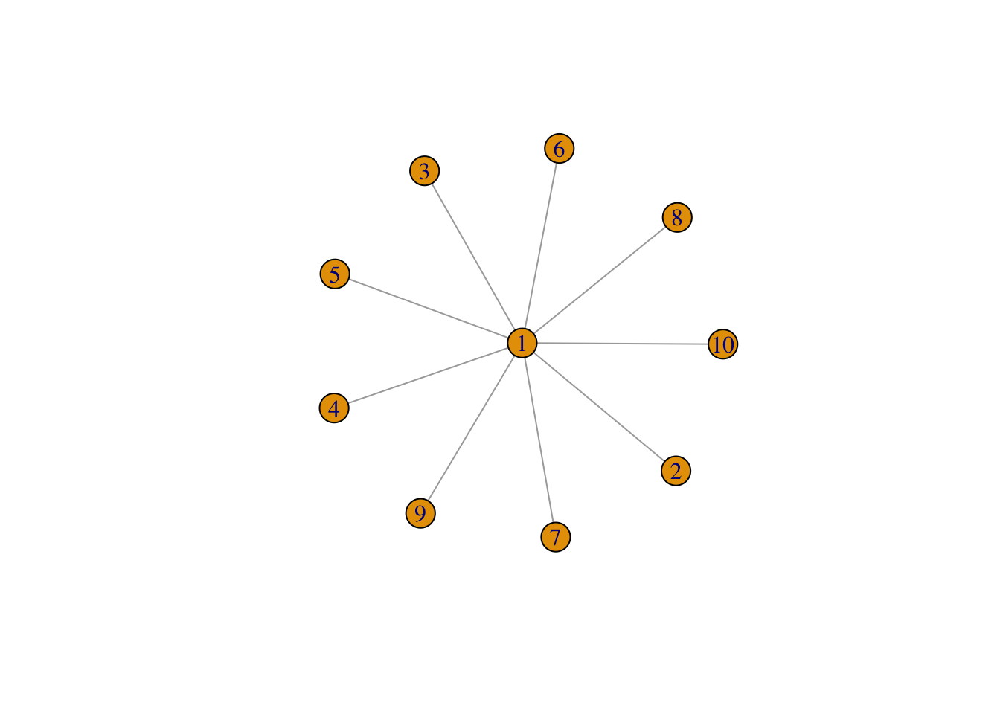
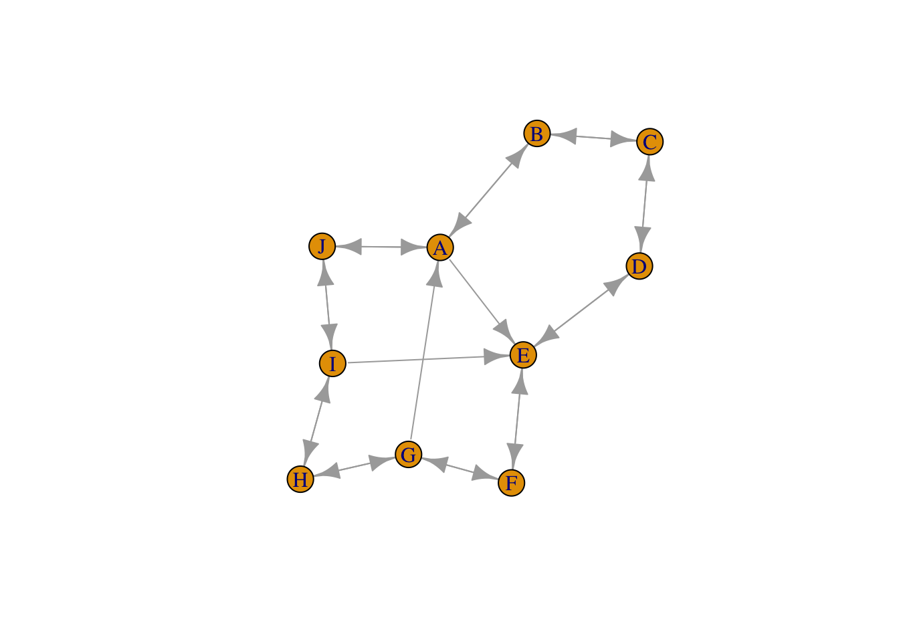
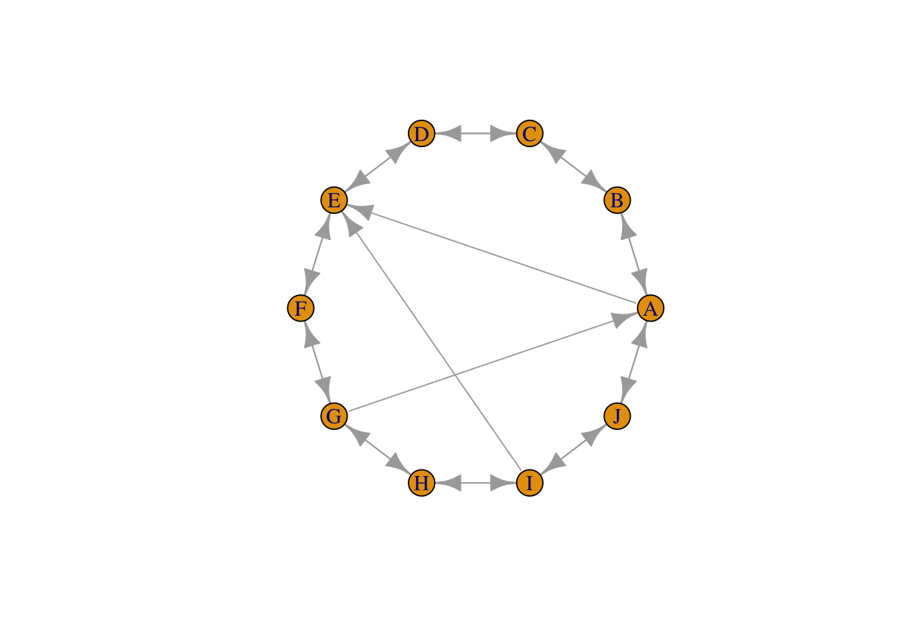
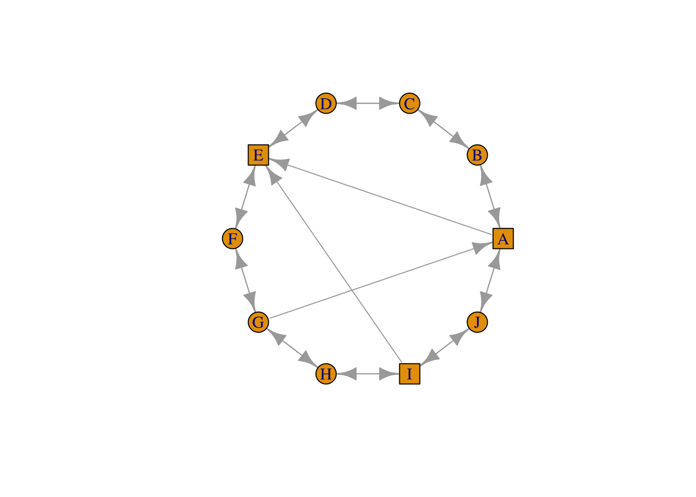
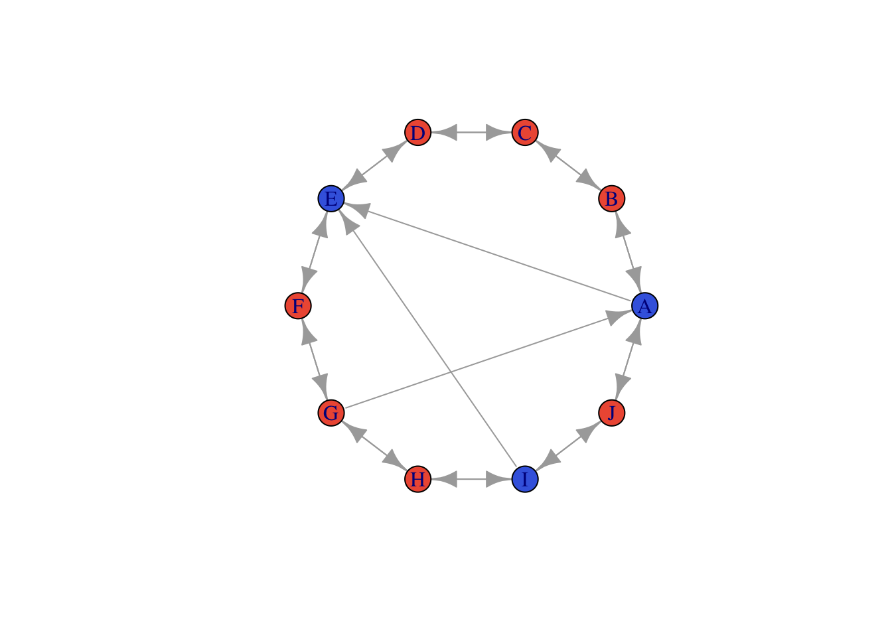

Chapter 6 Visualización
Buscar ayuda de los comandos plot.igraph, igraph.plotting.
A continuación dibujamos algunos grafos interesantes:
#library(igraph)
# Trees
g <- make_tree(27, children=3)
g; plot(g)## IGRAPH 5a9b648 D--- 27 26 -- Tree
## + attr: name (g/c), children (g/n), mode (g/c)
## + edges from 5a9b648:
## [1] 1-> 2 1-> 3 1-> 4 2-> 5 2-> 6 2-> 7 3-> 8 3-> 9 3->10 4->11 4->12 4->13
## [13] 5->14 5->15 5->16 6->17 6->18 6->19 7->20 7->21 7->22 8->23 8->24 8->25
## [25] 9->26 9->27
# Cliques
g <- make_full_graph(n=6)
g; plot(g)## IGRAPH e25d99a U--- 6 15 -- Full graph
## + attr: name (g/c), loops (g/l)
## + edges from e25d99a:
## [1] 1--2 1--3 1--4 1--5 1--6 2--3 2--4 2--5 2--6 3--4 3--5 3--6 4--5 4--6 5--6
# Lattices
g <- make_lattice(dimvector = c(5,5), circular = FALSE)
V(g)$label <- NA
g; plot(g)## IGRAPH 83ccff1 U--- 25 40 -- Lattice graph
## + attr: name (g/c), dimvector (g/n), nei (g/n), mutual (g/l), circular
## | (g/l), label (v/l)
## + edges from 83ccff1:
## [1] 1-- 2 1-- 6 2-- 3 2-- 7 3-- 4 3-- 8 4-- 5 4-- 9 5--10 6-- 7
## [11] 6--11 7-- 8 7--12 8-- 9 8--13 9--10 9--14 10--15 11--12 11--16
## [21] 12--13 12--17 13--14 13--18 14--15 14--19 15--20 16--17 16--21 17--18
## [31] 17--22 18--19 18--23 19--20 19--24 20--25 21--22 22--23 23--24 24--25#Stars
g <- make_star(n=10,mode = "undirected")
g; plot(g)## IGRAPH 6247eb0 U--- 10 9 -- Star
## + attr: name (g/c), mode (g/c), center (g/n)
## + edges from 6247eb0:
## [1] 1-- 2 1-- 3 1-- 4 1-- 5 1-- 6 1-- 7 1-- 8 1-- 9 1--10
Anillo con conexiones cruzadas:
g <- make_ring(10, directed=TRUE, mutual=TRUE)
V(g)$name <- LETTERS[1:10]
g <- g + edges(9,5, 7,1, 1,5)
plot(g)
6.1 Layout
Un layout es un conjunto de coordenadas x,y preestablecidas. Se pueden especificar manualmente o usando layout_functions
Determina la posición de los nodos en la red. Hay layouts ya diseñados o puedes diseñarlo desde 0.
Intentar minimizar cruces de arcos.
Algoritmos que lo consiguen: por ejemplo - Kamada Kawai algorithm, the Fruchterman Reingold algorithm, etc.
Lykamada <- layout.kamada.kawai(g)
plot(g, layout=Lykamada)
Lyfruchtermant <- layout.fruchterman.reingold(g)
plot(g, layout=Lyfruchtermant)
lo <- layout_in_circle(g)
head(lo, n=4) ## [,1] [,2]
## [1,] 1.000000 0.0000000
## [2,] 0.809017 0.5877853
## [3,] 0.309017 0.9510565
## [4,] -0.309017 0.9510565# lo es una matriz de coordenadas
lo## [,1] [,2]
## [1,] 1.000000 0.000000e+00
## [2,] 0.809017 5.877853e-01
## [3,] 0.309017 9.510565e-01
## [4,] -0.309017 9.510565e-01
## [5,] -0.809017 5.877853e-01
## [6,] -1.000000 1.224647e-16
## [7,] -0.809017 -5.877853e-01
## [8,] -0.309017 -9.510565e-01
## [9,] 0.309017 -9.510565e-01
## [10,] 0.809017 -5.877853e-01plot(g, layout=lo)
# See ?layout_ for a full list
# Para redes tipo árbol: layout_as_tree
gTree <- make_tree(15)
plot(gTree, layout=layout_as_tree(gTree, root = 1))
# layout como un grid
plot(g, layout=layout_on_grid(g))Mallas:
library(igraph)
#Buscar en ayuda
#?igraph::layout
g <- make_tree(15)
set.seed(3952)
layout1 <- layout.fruchterman.reingold(g)
plot(g, layout=layout1)
# Otra malla diferente
plot(g, layout=layout.kamada.kawai)
# Malla interactiva - Ejecutar en consola
# tkplot(g, layout=layout.kamada.kawai)6.2 Dibujar grafos ponderados
V(g)$label.cex <- ...
V(g)$label.color <- ...
V(g)$frame.color <- ...
E(g)$color <- rgb(....
E(g)$width <- 6.3 Cambiar aspecto y propiedades de un grafo
V(g)$shape
V(g)$size
V(g)$color- vertex.shape
- vertex.color
- vertex.size
- set_edge_attr
- set_vertex_attr
- set_graph_attr
plot(g, vertex.size = 20)plot(g, vertex.size = 10, vertex.color = "blue", vertex.frame.color = NA, vertex.label = NA)
plot(g, vertex.size = 10, vertex.color = "blue", vertex.frame.color = NA, vertex.label.cex = .7, vertex.label = NA, edge.curved = .5, edge.arrow.size = .3, edge.width = .7)
Note: colores en R [http://www.stat.columbia.edu/~tzheng/files/Rcolor.pdf](http://www.stat.columbia.edu/~tzheng/files/Rcolor.pdf)
library(tidyverse)
g1random <- sample_gnp(10, p=0.4)
V(g1random)[1]$color <- "yellow"
g1random %>%
set_edge_attr("color",value = "blue") %>%
plot()6.4 Ejemplos - plantillas
Plot vocales como rectángulos
g <- make_ring(10, directed=TRUE, mutual=TRUE)
V(g)$name <- LETTERS[1:10]
g <- g + edges(9,5, 7,1, 1,5)
plot(g)vowel <- V(g)$name %in% c("A","E","I","O","U") + 1 # gives 1 or 2
plot(g, layout=lo, vertex.shape=c("circle", "square")[vowel])
#colores
plot(g, layout=lo, vertex.color=c("tomato2", "royalblue")[vowel])
#tamaño
plot(g, layout=lo, vertex.size=c(15,30)[vowel])
#Propiedades usando atributos
V(g)$shape <- "circle" # Aplicado a todos los vértices
V(g)$size <- 15
V(g)$color <- "orange"
isVowel <- V(g)$name %in% c("A","E","I","O","U")
# Sobreescribir los nodos vocales
V(g)[isVowel]$shape <- "square"
V(g)[isVowel]$color <- "royalblue"
V(g)[isVowel]$size <- 25
plot(g, layout=lo)Propiedades de los arcos
E(g)$width <- 1
v1 <-V(g)[isVowel]
v1## + 3/10 vertices, named, from 4f4fa95:
## [1] A E IE(g)[v1 %--% v1]$width <- 4
# Ver http://igraph.org/r/doc/igraph-es-indexing.html
plot(g, layout=lo)#Arcos curvados
plot(g, layout=lo, edge.curved=0.3*which_mutual(g))
Agrupaciones por índices:
groupList <- list(vowelGroup = which(isVowel),
constGroup1 = c(2,3,4),
constGroup2 = c(6,7,8))
groupColours <- c(rgb(0,0.3,1,0.5),
rgb(0.8,0.4,0.1,0.5),
rgb(0.8,0.4,0.1,0.5))
plot(g, layout=layout_with_fr, # Fruchterman?Reingold layout
mark.groups=groupList, # Mark the groups
mark.col= groupColours,
# Eliminar el borde
mark.border = NA,
edge.curved=0.1*which_mutual(g))
text(0.45,0.1,"Vocales", cex=1.5)
text(0.5,0.9,"Grupo consonantes 1", cex=1.5)
text(-0.8,-1,"Grupo consonantes 2", cex=1.5)